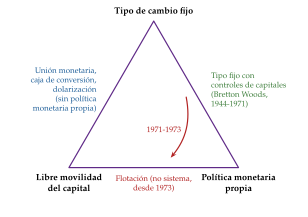
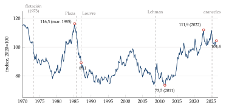
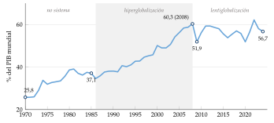
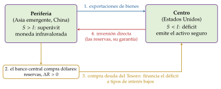
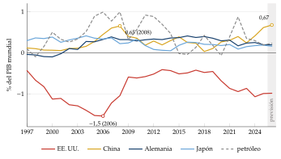
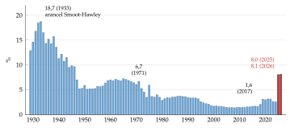
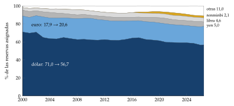
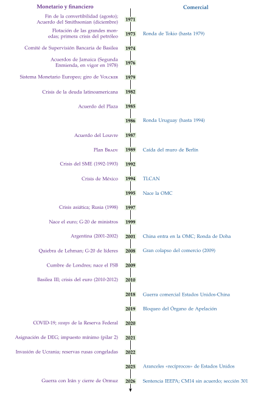

Tema 3.B.21
El sistema económico internacional desde la desaparición del sistema de Bretton-Woods.
Fin de Bretton Woods, no sistema, Plaza y Louvre, crisis emergentes, Bretton Woods II, 2008, COVID, aranceles de EE. UU., dólar y renminbi y reformas.
Exclusivo Material exclusivo de victorgutierrezmarcos.es y la app Oposición TCEE · DCE. Puedes usarlo libremente para tu estudio personal. No se autoriza su incorporación a otras plataformas, aplicaciones o servicios. Condiciones de uso.
Introducción
Enganche:
«Lo provisional es lo que más dura», dice el dicho. El 15 de agosto de 1971, Richard Nixon anunció por televisión que Estados Unidos suspendía «temporalmente» la convertibilidad del dólar en oro. Han pasado más de 50 años y el dólar no ha vuelto al oro; tampoco ha nacido un sistema que sustituya al de Bretton Woods.
En abril de 2025, otro presidente de Estados Unidos anunció aranceles «recíprocos» contra casi todo el mundo; el arancel medio efectivo de su país pasó del 2,6 % en 2024 al 8 % en 2025, el más alto desde 1946 (gráfico 5). Y, sin embargo, el dólar sigue en el 56,7 % de las reservas de divisas del mundo y en una de las 2 patas del 89 % de las operaciones de cambio.
La pregunta que recorre la exposición es: ¿hay hoy un sistema económico internacional o solo un «no sistema» que sobrevive porque nadie ha sabido construir otro?
Relevancia:
Para entender el presente: las reglas del juego entre países deciden a qué tipo de cambio comerciamos, quién se ajusta cuando hay desequilibrios y quién presta en última instancia cuando llega una crisis. Las crisis de los 80 y 90, la de 2008 y las tensiones comerciales de 2018-2026 son episodios de una misma historia.
Por el método: Joseph Schumpeter situaba la historia, junto a la teoría y la estadística, entre los 3 pilares del análisis económico, y Reinhart y Rogoff (2009) muestran que quien olvida la historia de las crisis las repite convencido de que «esta vez es distinto».
Para España: una economía abierta, con la peseta zarandeada en la crisis del Sistema Monetario Europeo de 1992-1993, dentro del euro desde 1999 y, como miembro de la Unión Europea, sujeta a la política comercial común frente a los aranceles de Estados Unidos [ver tema 4.A.21] [ver tema 4.A.22].
Contextualización:
La definición: el sistema económico internacional (SEI) es el conjunto de instituciones, normas y prácticas que ordena las relaciones económicas entre países. Tiene 3 planos estrechamente ligados (una exportación es una partida de la balanza comercial y, a la vez, de la financiera):
el plano comercial: las reglas del comercio de bienes y servicios (GATT y Organización Mundial del Comercio, OMC; acuerdos regionales) [ver tema 3.B.33];
el plano monetario: el régimen cambiario, los activos de reserva y la provisión de liquidez internacional [ver tema 3.B.15];
el plano financiero: los movimientos de capital, la regulación financiera y la gestión de las crisis [ver tema 3.B.18] [ver tema 3.B.27].
Las 3 funciones que se piden a un sistema monetario internacional: ajuste (que los desequilibrios se corrijan sin recesiones ni guerras comerciales), liquidez (suficientes activos de reserva para que el comercio crezca) y confianza (que los agentes no esperen su derrumbe). Sus fallos explican cada cambio del sistema.
De dónde venimos: el sistema de Bretton Woods (1944) se apoyó en 3 pilares institucionales, el Fondo Monetario Internacional (FMI) [ver tema 3.B.22], el Banco Internacional de Reconstrucción y Fomento (BIRF) [ver tema 3.B.30] y el GATT (1947), tras el fracaso de la Organización Internacional del Comercio [ver tema 3.B.33]; y en un patrón de cambios oro con paridades fijas pero ajustables frente al dólar, convertible en oro a 35 dólares la onza, y controles de capital [ver tema 3.B.20]. Dio 25 años de crecimiento sin precedentes, pero nada dura para siempre: sus problemas de ajuste, liquidez y confianza, resumidos en el dilema de Triffin, lo hicieron caer entre 1971 y 1973.
El «no sistema»: lo que vino después no se diseñó en una conferencia; se fue formando con los hechos. Williamson (1976) lo llamó no sistema (non-system): no hay ya reglas comunes sobre el tipo de cambio ni un activo de reserva definido, y cada país elige su régimen.
Problemática (preguntas clave):
¿Por qué cayó Bretton Woods y qué lo sustituyó?
¿Cómo han cumplido las funciones de ajuste, liquidez y confianza el comercio, las monedas y las finanzas desde 1973?
¿Qué cambiaron las grandes crisis (las de los emergentes, la de 2008, la pandemia)?
¿En qué situación está hoy el sistema, ante la fragmentación y los aranceles, y qué reformas se plantean?
Estructura:
La exposición sigue el orden cronológico y, en cada etapa, recorre los 3 planos del sistema.
I. Del fin de Bretton Woods a la Gran Moderación (1971-2007) (I): la ruptura, los primeros años del no sistema y la gran expansión del comercio y de las finanzas, con sus crisis en los emergentes.
II. De la crisis financiera global a la pandemia (2007-2021) (II): 2 crisis mundiales y la respuesta coordinada del G-20.
III. La actualidad: retos y propuestas de reforma (III): la fragmentación geoeconómica, el papel del dólar y las reformas pendientes.
3.B.21. El sistema económico internacional desde la desaparición del sistema de Bretton Woods
Introducción2′30″
I. Del fin de Bretton Woods a la Gran Moderación (1971-2007)11′
1. La ruptura del sistema de Bretton Woods (1971-1976)
2. Los primeros años del no sistema (1973-1979)
3. La Gran Moderación: el sistema comercial
4. La Gran Moderación: los sistemas monetario y financiero
II. De la crisis financiera global a la pandemia (2007-2021)7′
1. La crisis financiera global y la crisis del euro
2. Consecuencias sobre el sistema económico internacional
3. La crisis de la COVID-19
III. La actualidad: retos y propuestas de reforma8′30″
1. El sistema comercial: fragmentación y aranceles
2. Los sistemas monetario y financiero: el dólar y sus rivales
3. Retos y propuestas de reforma
Conclusión1′
Reparto del cante: introducción, 2′30″; I, 11′ (I.1, 2′; I.2, 1′30″; I.3, 2′30″; I.4, 5′, con 2′ para el modelo de Bretton Woods II); II, 7′ (II.1, 2′; II.2, 3′30″; II.3, 1′30″); III, 8′30″ (III.1, 3′; III.2, 3′; III.3, 2′30″), y conclusión, 1′. En cada etapa se recorren los 3 planos (comercial, monetario y financiero) en el mismo orden, para que el tribunal reconozca el patrón. Los gráficos que se dibujan son el trilema con el paso de Bretton Woods a la flotación (gráfico 1) y el esquema de Bretton Woods II (figura 1); la función clave es la identidad del saldo corriente (1). Los gráficos de datos son de apoyo y basta con citar su cifra clave. La crisis de 2008 y la de la deuda de 1982 se cuentan en resumen: su desarrollo está en otros temas. El dicho del enganche vuelve en la idea final.
Notación y siglas. \(E\) es el tipo de cambio directo (unidades de moneda nacional por unidad de moneda extranjera: si sube, la moneda nacional se deprecia), \(i\) e \(i^*\) los tipos de interés nacional y exterior, \(S\) el ahorro nacional, \(I\) la inversión y CC el saldo por cuenta corriente; \(R\) son las reservas internacionales. Siglas: FMI (Fondo Monetario Internacional), OMC (Organización Mundial del Comercio), BPI (Banco de Pagos Internacionales), FSB (Consejo de Estabilidad Financiera), DEG (derechos especiales de giro), CGV (cadenas globales de valor), NMF (nación más favorecida).
Para saber más
Barry Eichengreen, Globalizing Capital: la historia del sistema monetario internacional del patrón oro al presente, con el «no sistema» y la crisis de 2008.
Francisco Comín, Historia económica mundial: el manual en castellano que recorre la economía mundial desde 1973.
Dani Rodrik, The Globalization Paradox: por qué no se pueden tener a la vez la hiperglobalización, la soberanía nacional y la democracia, un trilema político que ayuda a leer la etapa actual.
I. Del fin de Bretton Woods a la Gran Moderación (1971-2007)
Conclusión anticipada: Bretton Woods cayó porque el capital empezó a moverse y el dólar no podía ser a la vez moneda de reserva y convertible en oro. Lo sustituyó un «no sistema» de libertad cambiaria que, con la liberalización del comercio y de los capitales, trajo la mayor globalización de la historia y 2 décadas de estabilidad en los países avanzados, pero también crisis repetidas en los emergentes y unos desequilibrios globales crecientes.
Nexo: empezamos por la ruptura, que es el punto de partida del tema.
I.1. La ruptura del sistema de Bretton Woods (1971-1976)
Por qué cae, en una frase por cada función [ver tema 3.B.20]:
ajuste: recaía en los países deficitarios, y Estados Unidos, emisor de la moneda de reserva, no tenía que ajustarse;
liquidez: el mundo necesitaba dólares, que solo salían con déficits de Estados Unidos; pero cuantos más dólares había fuera, menos creíble era su convertibilidad en oro (el dilema de Triffin, 1960);
confianza: desde 1960 los pasivos exteriores en dólares superaban al oro de Estados Unidos, y la financiación de la guerra de Vietnam y de los programas sociales aumentó el déficit y la inflación estadounidenses.
La lectura con el trilema: Bretton Woods combinaba tipos fijos y política monetaria propia gracias a los controles de capital. Cuando el capital empezó a moverse (los eurodólares, los ataques especulativos de finales de los 60), los países tuvieron que renunciar a uno de los 3 objetivos, y los grandes renunciaron al tipo fijo (gráfico 1) [ver tema 3.B.15].1

Fuente: elaboración propia a partir de Obstfeld, Shambaugh y Taylor (2005). Cada lado es un régimen que consigue los 2 objetivos de sus extremos y renuncia al del vértice opuesto. La flecha resume la ruptura: con el capital en movimiento, las grandes economías pasan del tipo fijo con controles a la flotación.
La ruptura, en 4 pasos:
Agosto de 1971: Nixon suspende la convertibilidad del dólar en oro y pone un recargo del 10 % a las importaciones hasta que los socios revalúen sus monedas. Es el fin de hecho del patrón de cambios oro.
Diciembre de 1971, Acuerdo del Smithsonian (Washington): el dólar se devalúa frente al oro hasta 38 dólares la onza, las demás monedas se revalúan y las bandas de fluctuación se amplían del \(\pm1\) % al \(\pm2,25\) %; Estados Unidos retira el recargo. Para limitar ese margen entre ellos, los países de la Comunidad Económica Europea crean en 1972 la «serpiente en el túnel» [ver tema 3.B.16].
Marzo de 1973: tras nuevos ataques especulativos y una segunda devaluación del dólar en febrero, las grandes monedas pasan a flotar. La primera crisis del petróleo, en octubre, confirma que un tipo flexible ayuda a absorber perturbaciones reales.2
Enero de 1976, Acuerdos de Jamaica (Comité Interino del FMI, Kingston), que se plasman en la Segunda Enmienda del Convenio Constitutivo del FMI, en vigor desde el 1 de abril de 1978:
libertad cambiaria: cada país elige su régimen, salvo fijar su moneda al oro; el FMI vigila que no haya manipulación del tipo de cambio para ganar competitividad (artículo IV) [ver tema 3.B.22];
desmonetización del oro: se suprime su precio oficial y el FMI vende parte de su oro;
se aspira a que el DEG sea el principal activo de reserva, algo que nunca llegó a ocurrir.
El resultado: Jamaica legaliza lo que ya ocurría. Desde entonces no hay reglas comunes de tipo de cambio ni un ancla nominal mundial: es el «no sistema» de Williamson (1976), que, en lo esencial, sigue vigente. Lo provisional se quedó.
I.2. Los primeros años del no sistema (1973-1979)
Nexo: una vez rota la paridad, veamos cómo funcionaron los 3 planos en una década marcada por 2 crisis del petróleo y por la estanflación.
Plano comercial: la Ronda de Tokio del GATT (1973-1979):
se rebajan los aranceles de los países industrializados en torno a un tercio, con una fórmula general en lugar de la negociación producto a producto (la fórmula suiza, que recorta más los aranceles más altos)3;
por primera vez se negocian las barreras no arancelarias, con «códigos» (subvenciones, antidumping, compras públicas, obstáculos técnicos) que solo firmaron algunos miembros; la Ronda Uruguay los hará obligatorios para todos;
a la vez crece el nuevo proteccionismo: restricciones voluntarias de las exportaciones y el Acuerdo Multifibras (1974), al margen de las reglas del GATT.
Plano monetario: flotación sin cooperación:
los grandes flotan, con intervención (flotación sucia), y la cooperación es mínima: ante la estanflación, Alemania y Japón aprietan para frenar la inflación y Estados Unidos estimula, de modo que el dólar se deprecia con fuerza hasta 1978-1979 (gráfico 2);
los europeos buscan una isla de estabilidad: la serpiente y, en marzo de 1979, el Sistema Monetario Europeo (SME), con tipos centrales frente al ecu y bandas de fluctuación [ver tema 3.B.16];
la cumbre del G-7 de Bonn (1978) ensaya la coordinación con la «locomotora» alemana y japonesa [ver tema 3.B.19].
Plano financiero: reciclaje de petrodólares y supervisión:
los superávits de los exportadores de petróleo se depositan en los bancos de Nueva York y Londres, que los prestan a América Latina y a otros países en desarrollo: es el origen de la crisis de la deuda de 1982;
tras la quiebra del banco alemán Herstatt (1974), los gobernadores del G-10 crean a finales de 1974 el Comité de Supervisión Bancaria de Basilea, para coordinar la supervisión de los bancos internacionales [ver tema 3.B.27].

Fuente: elaboración propia con datos del BPI, índice estrecho, 2020=100 . Una subida es una apreciación del dólar. Del máximo de marzo de 1985 al Acuerdo del Louvre (febrero de 1987), el dólar se depreció un 23 % en términos reales.
I.3. La Gran Moderación: el sistema comercial
Nexo: con la desinflación de principios de los 80 empieza la Gran Moderación (hasta 2007): menos volatilidad del crecimiento y de la inflación en los países avanzados y una integración comercial y financiera sin precedentes. Empezamos por el comercio.
El dato: el comercio mundial de bienes y servicios pasa del 37 % del PIB mundial en 1985 al 60 % en 2008, su máximo; desde entonces se estanca entre el 52 % y el 62 % (gráfico 3). Es la hiperglobalización.

Fuente: elaboración propia con datos del Banco Mundial, World Development Indicators . Exportaciones más importaciones en porcentaje del PIB mundial.
Avances multilaterales: la Ronda Uruguay (1986-1994):
entran por primera vez la agricultura y los textiles (con el fin del Acuerdo Multifibras en 2005), los servicios y la propiedad intelectual: los países en desarrollo aceptan disciplinas en servicios y propiedad intelectual a cambio de una apertura moderada de la agricultura de los desarrollados;
el Acta Final de Marrakech (1994) crea la OMC (1 de enero de 1995), con 3 grandes acuerdos (el GATT de 1994 para las mercancías, el Acuerdo General sobre el Comercio de Servicios y el de los aspectos de los derechos de propiedad intelectual relacionados con el comercio) y un Órgano de Solución de Diferencias con apelación obligatoria [ver tema 3.B.33] [ver tema 3.B.34];
en noviembre de 2001 se abre la Ronda de Doha, la del desarrollo, que nunca se cerró.
Nuevos protagonistas:
los tigres asiáticos (Corea del Sur, Taiwán, Hong Kong, Singapur) crecen con una industrialización orientada a la exportación, mientras América Latina abandona tarde la industrialización por sustitución de importaciones [ver tema 3.B.28];
China: desde la apertura de 1978, con zonas económicas especiales, y sobre todo tras su entrada en la OMC el 11 de diciembre de 2001, se convierte en la fábrica del mundo. Su competencia redujo el empleo industrial en las zonas de Estados Unidos más expuestas (el choque de China);
la caída del muro de Berlín (1989) incorpora a Europa central y oriental y a Rusia a la economía de mercado.
Las cadenas globales de valor (CGV): el abaratamiento del transporte (el contenedor) y de las comunicaciones permite partir la producción entre países; el comercio de bienes intermedios y el intraempresa ganan peso. Baldwin (2016) habla de la «segunda separación» (second unbundling): ya no solo se separan producción y consumo, sino las fases de la producción [ver tema 3.B.18].
Regionalismo: a la vez que el multilateralismo, crecen los acuerdos regionales (mercado único europeo, 1993; TLCAN, 1994; Mercosur, 1991; ASEAN y su zona de libre comercio, 1992) [ver tema 3.B.35].
Los efectos distributivos: la «curva del elefante» de Lakner y Milanović (2016) muestra que entre 1988 y 2008 ganaron mucho las clases medias de Asia emergente y el 1 % más rico del mundo, y casi nada las clases medias y bajas de los países ricos: la semilla del malestar con la globalización.
I.4. La Gran Moderación: los sistemas monetario y financiero
Nexo: tras el comercio, las monedas y los capitales. Los países que flotaron buscaron cooperar; los que fijaron su moneda sufrieron las grandes crisis del periodo; y, al final, Asia y Estados Unidos formaron un sistema de hecho, Bretton Woods II.
I.4.1. Países con tipo flexible: la cooperación cambiaria
Del abandono al Plaza: la combinación de política fiscal expansiva y monetaria muy restrictiva de Paul Volcker (1979-1982) aprecia el dólar un 50 % en términos reales entre 1978 y marzo de 1985 (gráfico 2) y dispara el déficit exterior de Estados Unidos, que amenaza con medidas proteccionistas.
Acuerdo del Plaza (22 de septiembre de 1985): el G-5 (Estados Unidos, Japón, Alemania, Francia y Reino Unido) acuerda intervenir para depreciar el dólar.
Acuerdo del Louvre (22 de febrero de 1987): con el dólar ya un 23 % por debajo de su máximo, el G-6 (el G-5 y Canadá; Italia no lo firmó) acuerda estabilizarlo en torno a unas zonas objetivo que no se publicaron [ver tema 3.B.19].
El orden dentro del no sistema: desde los 90, la estabilidad no viene de un tipo de cambio sino de bancos centrales independientes con objetivos de inflación (Nueva Zelanda en 1990, después Canadá, Reino Unido, Suecia…) [ver tema 3.A.36].
La integración monetaria europea: el SME (1979) desemboca en la Unión Económica y Monetaria y en el euro (1999, con 11 países; hoy, 21, con Bulgaria desde 2026) [ver tema 3.B.16].
I.4.2. Países con tipo fijo: las crisis de los emergentes
La idea: con libertad de capitales, defender un tipo fijo exige credibilidad; cuando falta, llega el ataque especulativo. Desde 1973 las crisis cambiarias y bancarias son más frecuentes que con Bretton Woods, y casi siempre combinan fundamentos débiles con pánico. La teoría las ha ordenado en generaciones de modelos [ver tema 3.B.17] (tabla 1).
La crisis de la deuda latinoamericana (1982):
los bancos prestaron en los 70, a tipo variable y en dólares, los petrodólares reciclados; la subida de tipos de Volcker (1979-1982), la recesión mundial y la caída de las materias primas hicieron impagable la deuda;
en agosto de 1982 México declara que no puede pagar, y la crisis se extiende a casi toda la región: es la década perdida de América Latina;
la gestión pasa de los aplazamientos (Club de París para los acreedores oficiales y Club de Londres para los bancos) y el Plan Baker (1985), que daba más préstamos a cambio de reformas, al Plan Brady (1989), que cambió préstamos por bonos con quita y garantía del Tesoro estadounidense [ver tema 3.B.29].
La crisis del SME (1992-1993): la reunificación alemana obliga al Bundesbank a subir tipos cuando otros países están en recesión; tras el «no» danés a Maastricht, el mercado duda de que esos países quieran pagar el coste de defender la paridad. La libra y la lira salen del mecanismo de cambios en septiembre de 1992, la peseta se devalúa varias veces y en agosto de 1993 las bandas se amplían al \(\pm15\) % [ver tema 3.B.16] [ver tema 4.A.27].4
México (1994-1995), el «efecto tequila»: un peso apreciado en términos reales, un déficit corriente cercano al 7 % del PIB, un auge del crédito con una banca mal supervisada y, en 1994, deuda pública a corto plazo en dólares (los tesobonos) y una subida de tipos de la Reserva Federal. En diciembre de 1994 el peso se deja flotar; el PIB cae un 5,9 % en 1995 y México necesita un rescate de Estados Unidos y el FMI. Es una crisis mixta: fundamentos frágiles y un pánico de deuda a corto plazo, casi una parada súbita.
Asia (1997-1998): países con cuentas públicas saneadas e inflación baja, pero con una entrada masiva de capital a corto plazo en dólares, bancos con garantías implícitas del Estado (riesgo moral) y burbujas inmobiliarias. Tras la devaluación del bat tailandés (julio de 1997), la crisis salta a Indonesia, Malasia, Filipinas y Corea del Sur: crisis gemelas, cambiaria y bancaria, que se retroalimentan por los balances en divisas. En 1998 el PIB cae un 13,1 % en Indonesia y un 7,6 % en Tailandia.5
Rusia (1998), Brasil (1999) y Argentina (2001-2002): la moratoria rusa de agosto de 1998 (un problema sobre todo fiscal y de deuda, con la banca expuesta) contagia a otros emergentes y obliga a Brasil a dejar flotar el real en enero de 1999. Argentina, con una caja de conversión de un peso por dólar desde 1991, acumula deuda en dólares; en 2001 llegan el pánico bancario y el «corralito», en enero de 2002 abandona la paridad y declara la mayor suspensión de pagos soberana de su tiempo; el PIB cae un 10,9 % en 2002.
| Crisis | Lectura | Rasgos clave | Salida |
|---|---|---|---|
| América Latina, 1982 | primera generación y de deuda | Déficits monetizados, deuda bancaria en dólares a tipo variable, subida de tipos de Volcker | Plan Baker y Plan Brady |
| SME, 1992-1993 | segunda generación | Coste de defender la paridad con paro alto; expectativas que se cumplen solas | Bandas del \(\pm15\) % |
| México, 1994-1995 | mixta (parada súbita) | Peso apreciado, déficit corriente, tesobonos a corto en dólares | Rescate de EE. UU. y FMI; flotación |
| Asia, 1997-1998 | tercera generación (gemelas) | Deuda privada a corto en dólares, riesgo moral, burbujas | Programas del FMI; flotación y reservas |
| Rusia, 1998 | mixta, fiscal y de deuda | Déficit, caída del petróleo, banca expuesta | Moratoria y flotación |
| Argentina, 2001-2002 | gemela y de deuda | Caja de conversión con deuda en dólares; corralito | Impago y flotación |
Fuente: elaboración propia a partir de Laeven y Valencia (2020) y Reinhart y Rogoff (2009). Las generaciones de modelos se explican en otro tema: las crisis reales rara vez son de un tipo puro.
La respuesta del sistema: en 1999 nacen el Foro de Estabilidad Financiera (del G-7) y el G-20 de ministros de Finanzas y gobernadores, aún discreto [ver tema 3.B.19]; Basilea I (1988) da paso a Basilea II (2004), que mide mejor el riesgo de los activos [ver tema 3.B.27]; y los emergentes sacan su propia lección: acumular reservas como seguro.
Recapitulando: la libertad de capitales hizo frágiles los tipos fijos; los emergentes que sobrevivieron a las crisis dejaron flotar sus monedas o, sobre todo en Asia, las mantuvieron bajas frente al dólar acumulando reservas. Es lo que se ha llamado Bretton Woods II.
I.4.3. El modelo de Bretton Woods II (Dooley, Folkerts-Landau y Garber, 2003)
a) Idea
A principios de los 2000, Dooley, Folkerts-Landau y Garber (2003) sostienen que el «no sistema» se parece mucho al de Bretton Woods: un centro, Estados Unidos, que emite la moneda de reserva y tiene déficit, y una periferia, ahora Asia emergente y sobre todo China (en los 50 y 60, Europa y Japón), que fija su moneda al dólar por debajo de su valor para crecer exportando.
Lo llaman Bretton Woods II (revived Bretton Woods system): un acuerdo implícito, sin tratado, que cada parte cumple porque le interesa.
b) Modelo
i) Supuestos
La periferia tiene mucho trabajo subempleado en el campo y un sistema financiero poco eficiente: necesita crear empleo industrial y elige crecer con exportaciones.
Tipo de cambio infravalorado: la periferia fija o gestiona su moneda frente al dólar e interviene para que no se aprecie; mantiene controles de capital.
El centro emite el activo seguro y líquido por excelencia (la deuda del Tesoro), tiene libertad de capitales y no interviene en el mercado de divisas.
Las identidades contables de la balanza de pagos se cumplen siempre [ver tema 3.B.11].
ii) Desarrollo
La identidad de partida: para cualquier país, el saldo por cuenta corriente es la diferencia entre su ahorro y su inversión,
\[\mathrm{CC}\equiv S-I\tag{1}\]
y, como el mundo no comercia con Marte, los saldos de todos los países suman cero: el déficit del centro es la suma de los superávits del resto.
El mecanismo, paso a paso (figura 1):
Paso 1, la periferia exporta:
con la moneda barata, vende al centro más de lo que le compra y tiene superávit corriente (\(S>I\)).
Paso 2, el banco central de la periferia interviene:
compra los dólares que entran para que su moneda no se aprecie y acumula reservas, \(\Delta R>0\).
Paso 3, las reservas vuelven al centro:
las coloca en deuda del Tesoro de Estados Unidos, lo que financia el déficit corriente del centro (\(S<I\)) a tipos de interés bajos.
Paso 4, el capital privado del centro va a la periferia:
las empresas del centro invierten en fábricas de la periferia; las reservas oficiales que esta guarda en el centro hacen de garantía implícita de esa inversión directa.

Fuente: elaboración propia a partir de Dooley, Folkerts-Landau y Garber (2003).
iii) Implicaciones
Gana la periferia: crea empleo industrial y absorbe tecnología con la inversión extranjera.
Gana el centro: consume e invierte más de lo que ahorra, con tipos de interés bajos y bienes baratos.
Es estable mientras dure el excedente de trabajo en la periferia: según sus autores, durante 1 o 2 décadas, como el primer Bretton Woods. El déficit de Estados Unidos no tenía por qué acabar en crisis.
c) Extensiones
El exceso de ahorro mundial (global saving glut): Bernanke (2005) explica los tipos de interés bajos y el déficit de Estados Unidos por el ahorro de Asia y de los exportadores de petróleo, que se coloca allí.6
La escasez de activos seguros: el mundo demanda activos seguros que solo unos pocos países emiten, sobre todo Estados Unidos.
El privilegio exorbitante: Estados Unidos se endeuda en su moneda a tipos bajos e invierte fuera en activos de más riesgo y rendimiento: ha pasado de banquero a capitalista de riesgo del mundo.
El dilema de Triffin moderno: con tipos flexibles, el emisor del activo de reserva solo puede satisfacer la demanda mundial de activos seguros endeudándose cada vez más con el exterior, hasta poner en duda su solvencia [ver tema 3.B.20].
d) Evidencia empírica
El déficit corriente de Estados Unidos llegó al 1,5 % del PIB mundial en 2006, frente a superávits de China, Alemania, Japón y los exportadores de petróleo (gráfico 4); China tenía en 2008 un superávit del 0,65 % del PIB mundial.
Las reservas de divisas de los bancos centrales pasaron de 1,8 billones de dólares en 1999 a más de 6 en 2007, la mayor parte en dólares.
Tras 2008 los desequilibrios se redujeron, pero desde 2022 vuelven a crecer: el FMI prevé para 2026 un superávit chino del 0,67 % del PIB mundial, el mayor de su historia.

Fuente: elaboración propia con datos del FMI, World Economic Outlook de octubre de 2026 . 2026, previsión. «Petróleo»: suma de 18 exportadores de combustibles (Arabia Saudí, Rusia, Noruega, Emiratos Árabes Unidos y otros).
e) Valoración
A favor: explicó bien por qué el déficit de Estados Unidos duró tanto sin una crisis del dólar, y sus autores sostuvieron después que el sistema sobrevivió a 2008.
En contra:
la periferia no actúa como un bloque y Europa no encaja en el esquema;
la estabilidad era aparente: el ahorro que entraba en Estados Unidos alimentó el crédito barato y la burbuja inmobiliaria, y Obstfeld y Rogoff (2009) vinculan los desequilibrios con la crisis de 2008;
China dejó de fijar el renminbi en 2005 y su superávit cayó tras 2008: la periferia no quería seguir financiando al centro indefinidamente.
Lo que queda: el centro y la periferia siguen ahí, ahora con tensiones comerciales; esa crisis de 2007 es la que abre el apartado siguiente.
Recapitulando el apartado I: tras la ruptura, el no sistema dio libertad cambiaria, comercio y capitales libres; funcionó para los avanzados y castigó a los emergentes con tipo fijo, que aprendieron a protegerse con reservas. Ese seguro alimentó unos desequilibrios globales que estallaron en 2007.
II. De la crisis financiera global a la pandemia (2007-2021)
Conclusión anticipada: 2 crisis mundiales en poco más de una década mostraron los límites del no sistema, pero también su capacidad de reacción: el G-20 sustituyó al G-7 como foro de coordinación, la regulación financiera se rehízo y la Reserva Federal actuó de prestamista de última instancia en dólares para todo el mundo. El comercio, en cambio, dejó de crecer más que el PIB y empezó a politizarse.
Nexo: tras la Gran Moderación, la crisis que la cerró.
II.1. La crisis financiera global y la crisis del euro
La crisis financiera global (2007-2009), en resumen [ver tema 3.B.26]:
El origen: crédito hipotecario de baja calidad (subprime) en Estados Unidos, titulizado y repartido por todo el sistema, en un marco de supervisión laxa, con un sistema bancario en la sombra muy apalancado y con el ahorro exterior de Bretton Woods II manteniendo bajos los tipos a largo plazo.
El detonante: la Reserva Federal subió el tipo de interés oficial del 1 % a mediados de 2004 al 5,25 % en junio de 2006; los impagos hipotecarios, la caída del precio de la vivienda y, desde agosto de 2007, el cierre de los mercados interbancarios llevaron a la quiebra de Lehman Brothers (15 de septiembre de 2008).
El contagio: a Europa por los balances de sus bancos, que habían comprado activos titulizados estadounidenses y se financiaban en dólares; a los emergentes por la caída del comercio y la huida hacia la calidad. En 2009 el PIB mundial cayó un 0,4 %, la primera caída desde la posguerra.7
La crisis del euro (2010-2012):
problemas fiscales (Grecia, Portugal) y bancarios e inmobiliarios (Irlanda, España) en una unión monetaria sin activo seguro común, sin prestamista de última instancia para los Estados ni unión bancaria: el círculo vicioso entre bancos y soberanos disparó las primas de riesgo y el mercado llegó a descontar la ruptura del euro;
la reacción llegó tarde, pero fue profunda: el Mecanismo Europeo de Estabilidad, el Pacto de Estabilidad reforzado, el procedimiento de desequilibrios macroeconómicos, la Unión Bancaria y el «lo que sea necesario» del BCE (julio de 2012) con las operaciones monetarias de compraventa [ver tema 3.B.16] [ver tema 3.B.45] [ver tema 4.A.28];
en 2015, Grecia vivió un corralito y estuvo a punto de salir del euro.
II.2. Consecuencias sobre el sistema económico internacional
Nexo: pasamos a cómo cambió la crisis cada uno de los 3 planos.
El sistema comercial
El gran colapso del comercio (great trade collapse): en 2009 el volumen del comercio mundial de mercancías cayó más del 10 %, mucho más que el PIB, por la caída de la demanda de bienes duraderos, las CGV y la falta de financiación del comercio. A diferencia de los años 30, no hubo una vuelta general al proteccionismo, gracias al compromiso del G-20 y a las reglas de la OMC.
La «lentiglobalización» (slowbalization): desde 2008 el comercio deja de crecer más que el PIB; su peso en el PIB mundial se estanca (gráfico 3), las CGV dejan de alargarse y China produce dentro cada vez más de lo que antes importaba.
La OMC, atascada:
la Ronda de Doha no se cierra; solo salen acuerdos parciales, como el de Facilitación del Comercio (Bali, 2013; en vigor en 2017) [ver tema 3.B.33];
desde diciembre de 2019, Estados Unidos bloquea el nombramiento de los miembros del Órgano de Apelación, que deja de funcionar; parte de los miembros crean en 2020 un arbitraje provisional, el MPIA, que hoy agrupa a 62 miembros con el 60 % del comercio mundial.
Más regionalismo y acuerdos «profundos» que abordan lo que la OMC no puede (inversión, servicios, normas técnicas): el acuerdo de la UE con Canadá (2016) y con Japón (2019); el Acuerdo Transpacífico (CPTPP, 2018); en Asia, la Asociación Económica Integral Regional (RCEP, firmada en 2020); y el T-MEC entre Estados Unidos, México y Canadá, que sustituye al TLCAN en 2020 [ver tema 3.B.35].
La guerra comercial entre Estados Unidos y China (2018-2020): Estados Unidos acusa a China de subvenciones, transferencia forzosa de tecnología y exceso de capacidad, y le pone aranceles sobre unos 370.000 millones de dólares de importaciones (sección 301); China responde. La tregua de la «fase uno» (enero de 2020) no resolvió el fondo.
El sistema financiero
El G-20 de líderes pasa a ser el «foro principal» de la cooperación económica (Pittsburgh, 2009), reflejo del peso de los emergentes: hoy reúne a 19 países, la UE y, desde 2023, la Unión Africana, con en torno al 85 % del PIB mundial, el 75 % del comercio y 2 tercios de la población [ver tema 3.B.19].
La cumbre de Londres (2 de abril de 2009): estímulos fiscales coordinados, triplicar los recursos del FMI hasta 750.000 millones de dólares, una asignación de DEG de 250.000 millones y la conversión del Foro de Estabilidad Financiera en el Consejo de Estabilidad Financiera (FSB).
El FSB coordina la agenda de reformas: requisitos más altos para los bancos sistémicos (demasiado grandes para caer), regímenes de resolución con recapitalización interna, compensación centralizada de los derivados extrabursátiles, menos dependencia de las agencias de calificación y vigilancia de la intermediación financiera no bancaria.
Basilea III (2010, completado en 2017): más capital y de mejor calidad, colchones de conservación y anticíclico, ratio de apalancamiento y 2 ratios de liquidez [ver tema 3.B.27].
El sistema monetario
La Reserva Federal, prestamista de última instancia del mundo: con las líneas swap de dólares con otros bancos centrales, que en octubre de 2013 se hicieron permanentes con 5 de ellos (BCE, Banco de Japón, de Inglaterra, de Canadá y Nacional Suizo), cubrió la escasez de dólares de los bancos extranjeros, con importes superiores a los recursos del FMI.
El ciclo financiero global: la política monetaria de la Reserva Federal mueve los precios de los activos, el crédito y los flujos de capital en todo el mundo. Las compras de activos llevaron capital a los emergentes en busca de rentabilidad, y el anuncio de su retirada (taper tantrum, 2013) lo sacó de golpe. Un tipo de cambio flexible no aísla del todo: «más que un trilema, un dilema» entre libertad de capitales y política monetaria propia [ver tema 3.B.15].
Las «guerras de divisas»: los emergentes se quejaron de que la expansión monetaria de los avanzados apreciaba sus monedas; el G-7 se comprometió en 2013 a no fijar objetivos de tipo de cambio [ver tema 3.B.19].
II.3. La crisis de la COVID-19
La crisis: una perturbación sanitaria que paraliza a la vez la oferta y la demanda; en 2020 el PIB mundial cae un 2,7 % y el comercio se hunde en el segundo trimestre, para recuperarse muy deprisa en 2021. En marzo de 2020 sale de los emergentes el capital más deprisa que nunca.
La respuesta, mucho más rápida que en 2008:
fiscal: estímulos enormes (los planes CARES y de Rescate en Estados Unidos; el Next Generation EU en la UE, con deuda común) [ver tema 3.A.40];
monetaria: tipos a cero y compras masivas de activos; la Reserva Federal reactiva sus líneas swap, las abre a 9 bancos centrales más y crea una facilidad de recompra para bancos centrales extranjeros (FIMA), permanente desde julio de 2021;
del FMI: financiación de emergencia y, en agosto de 2021, la mayor asignación de DEG de su historia, 456.000 millones de DEG (unos 650.000 millones de dólares) [ver tema 3.B.22];
de la deuda: la Iniciativa de Suspensión del Servicio de la Deuda del G-20 (mayo de 2020-diciembre de 2021) aplazó más de 12.000 millones de dólares a casi 50 países pobres, y el Marco Común (noviembre de 2020) abre la reestructuración caso a caso con China en la mesa [ver tema 3.B.29].
Las consecuencias para el sistema: la pandemia (y el bloqueo del canal de Suez en 2021) mostró la fragilidad de las CGV largas; los países buscan resiliencia y autonomía estratégica, y la política industrial vuelve. Fue también la última gran respuesta coordinada: la cooperación de las vacunas (COVAX) quedó muy por debajo de lo prometido.
Recapitulando el apartado II: el no sistema resistió 2 crisis mundiales gracias a la coordinación del G-20 y a la Reserva Federal; pero el comercio dejó de tirar y la confianza en la globalización se resintió. Es el punto de partida de la etapa actual.
III. La actualidad: retos y propuestas de reforma
Conclusión anticipada: desde 2022 el sistema se fragmenta. La seguridad nacional pesa más que la eficiencia, el principal impulsor del multilateralismo es hoy quien más lo cuestiona y los bloques geopolíticos se notan en el comercio, en las reservas y en los pagos. Aun así, el dólar sigue siendo el centro del sistema monetario y el comercio mundial ha resistido mejor de lo esperado.
Nexo: tras las 2 crisis mundiales, la situación actual, con los mismos 3 planos.
III.1. El sistema comercial: fragmentación y aranceles
La fragmentación geoeconómica: la invasión rusa de Ucrania (febrero de 2022) trae sanciones sin precedentes, la exclusión de bancos rusos de SWIFT y la congelación de unos 300.000 millones de dólares de reservas rusas; la política industrial vuelve con fuerza (en Estados Unidos, la Inflation Reduction Act y la CHIPS Act, de 2022; en la UE, la autonomía estratégica abierta), y el comercio se reorienta hacia países afines, el friend-shoring [ver tema 3.B.7]. El FMI estima que una fragmentación grave del comercio podría costar hasta el 7 % del PIB mundial.
Los aranceles de Estados Unidos de 2025-2026:
la escalada: con la ley de poderes económicos de emergencia (IEEPA), aranceles «del fentanilo» a Canadá, México y China (febrero-marzo de 2025) y, el 2 de abril de 2025, aranceles «recíprocos»: un 10 % universal y tipos más altos por país; con China, la escalada llegó al 145 % hasta la tregua de Ginebra (mayo de 2025) y el acuerdo de Busan (octubre-noviembre de 2025), prorrogado hasta enero de 2027;
los acuerdos: con el Reino Unido (10 %), y con la UE, Japón y Corea del Sur, un techo del 15 % para casi todo; además, aranceles de seguridad nacional (sección 232) del 50 % al acero y al aluminio y del 25 % a los automóviles;
el Tribunal Supremo: el 20 de febrero de 2026, en el caso Learning Resources contra Trump, declaró por 6 votos contra 3 que la IEEPA no permite imponer aranceles, una potestad del Congreso;
la sustitución: un recargo temporal del 10 % (sección 122, febrero-julio de 2026) y, desde el 24 de julio de 2026, aranceles por «trabajo forzoso» (sección 301) del 10 % o el 12,5 % a 60 economías, que concentran casi todas las importaciones; los derechos cobrados con la IEEPA se están devolviendo;
el resultado: el arancel medio efectivo pasó del 2,6 % en 2024 al 8 % en 2025, con un máximo del 11,3 % en el cuarto trimestre, y ronda el 7 % en 2026 (gráfico 5).

Fuente: elaboración propia con datos del BEA : derechos de aduana recaudados en porcentaje de las importaciones de bienes. 2026, primeros 3 trimestres.
La OMC, debilitada:
la parte del comercio mundial en condiciones de NMF bajó del 80 % a principios de 2025 al 72 % en febrero de 2026;
la 14.ª Conferencia Ministerial (Yaundé, marzo de 2026) terminó sin resultados: por primera vez desde 1998 expiró la moratoria que impedía poner aranceles a las transmisiones electrónicas, y el Órgano de Apelación sigue bloqueado;
sigue habiendo adhesiones (166 miembros desde la de Timor Oriental, en 2024) y acuerdos plurilaterales entre quienes quieren avanzar, como el de comercio electrónico.
La resistencia del comercio: pese a todo, el volumen del comercio mundial de mercancías creció un 4,6 % en 2025, con importaciones adelantadas a los aranceles y el tirón de los bienes de inteligencia artificial, y la OMC prevé un 3,9 % en 2026. El comercio se desvía (de China hacia Estados Unidos a través de terceros, como Vietnam o México) más de lo que se destruye.
Un choque más: la guerra de Estados Unidos e Israel con Irán, desde el 28 de febrero de 2026, y el cierre del estrecho de Ormuz, el mayor choque petrolero en décadas según el FMI, que prevé para 2026 un crecimiento mundial del 3,1 % y una fuerte contracción en el Golfo.
III.2. Los sistemas monetario y financiero: el dólar y sus rivales
La dominancia del dólar: pese a todo, el dólar sigue en el centro del sistema:
reservas: el 56,7 % de las reservas de divisas asignadas (junio de 2026), frente al 71 % de 1999; el euro, en el 20,6 %; el renminbi, en el 2,1 % (gráfico 6);
mercado de divisas: está en una de las 2 patas del 89,2 % de las operaciones (abril de 2025), y el renminbi ya es la 5.ª moneda más negociada, con el 8,5 % [ver tema 3.B.13];
facturación del comercio: buena parte del comercio mundial se factura en dólares aunque no pase por Estados Unidos, lo que hace que los tipos de cambio frente al dólar pesen más en los precios del comercio que los bilaterales (el paradigma de la moneda dominante).

Fuente: elaboración propia con datos del FMI, COFER . Cierre de cada año y, en 2026, junio. El renminbi se publica por separado desde finales de 2016.
La diversificación:
el oro: los bancos centrales compran más de 1.000 toneladas al año desde 2022, en parte por miedo a sanciones; a precios de mercado, el oro era a finales de 2025 el 27 % de las reservas oficiales, por delante de la deuda del Tesoro de Estados Unidos (22 %) y del euro (15 %);
las monedas «no tradicionales» (dólares canadiense y australiano, won, coronas nórdicas…) ganan más peso que el renminbi.
La internacionalización del renminbi: China la impulsa desde 2009 con la liquidación del comercio en renminbis, centros de compensación en el exterior, su entrada en la cesta del DEG (2016, hoy con el 12,28 %), una red de líneas swap del Banco Popular de China con más de 30 bancos centrales, su propio sistema de pagos interbancarios transfronterizos (CIPS) y proyectos de monedas digitales de bancos centrales (mBridge, del que el BPI se retiró en 2024). Pero su cuenta de capital sigue controlada: sin libre convertibilidad ni mercados profundos y abiertos, el renminbi no puede ser una moneda de reserva mundial [ver tema 3.B.13].
Las nuevas formas del dinero: la ley GENIUS (julio de 2025) regula en Estados Unidos las monedas estables (stablecoins), casi todas en dólares, que pueden extender el uso del dólar fuera del sistema bancario; la UE prepara el euro digital, con el mandato del Parlamento Europeo de julio de 2026 y un piloto previsto para 2027.
Los desequilibrios globales vuelven: tras reducirse hasta 2019, el FMI advierte de que crecen de nuevo, con el superávit de China y el déficit de Estados Unidos (gráfico 4), y pide reequilibrar con políticas internas (más consumo en China, menos déficit público en Estados Unidos) y no con aranceles, que apenas mueven el saldo corriente, porque este depende del ahorro y la inversión, (1).
La red de seguridad financiera mundial: reservas propias, líneas swap, acuerdos regionales (la Iniciativa Chiang Mai, el Mecanismo Europeo de Estabilidad) y el FMI. Es amplia, pero desigual: los países sin línea swap dependen del FMI [ver tema 3.B.22].
III.3. Retos y propuestas de reforma
Nexo: con este diagnóstico, los grandes retos del sistema y lo que se propone para cada uno.
El multilateralismo y la gobernanza:
el FMI: la 16.ª revisión general de cuotas (diciembre de 2023) aumenta un 50 % las cuotas sin cambiar su reparto, pero no ha entrado en vigor: falta, sobre todo, el voto del Congreso de Estados Unidos, y el plazo se ha prorrogado hasta el 15 de noviembre de 2026; la 17.ª, que debería dar más peso a los emergentes, sigue sin acuerdo [ver tema 3.B.22];
el G-20: dividido; Estados Unidos no acudió a la cumbre de Johannesburgo (noviembre de 2025) y preside el grupo en 2026, con la cumbre prevista en Miami en diciembre;
la retirada de Estados Unidos de la Organización Mundial de la Salud y del Acuerdo de París (efectiva el 27 de enero de 2026) y la orden de salir de 66 organizaciones internacionales (enero de 2026), aunque no del FMI ni del Banco Mundial.
El sistema monetario: las propuestas van de lo modesto a lo ambicioso:
reforzar la red de seguridad (más recursos al FMI, más líneas swap, reciclar los DEG de los países ricos hacia los pobres, como el Fondo Fiduciario para la Resiliencia y la Sostenibilidad);
un sistema multipolar, con el euro y el renminbi como alternativas y más oferta de activos seguros fuera de Estados Unidos (deuda común europea);
un activo de reserva supranacional, el DEG, en la línea del bancor de Keynes y de la propuesta de Triffin: la más coherente con los fallos del no sistema y la menos realista.
El sistema comercial: reformar la OMC (restablecer el Órgano de Apelación, reglas sobre subvenciones industriales y empresas públicas, el trato especial y diferenciado), avanzar con acuerdos plurilaterales y acuerdos regionales profundos (la UE ha firmado con Mercosur en diciembre de 2024 y negocia con India e Indonesia) [ver tema 3.B.33] [ver tema 3.B.41].
El sistema financiero: completar Basilea III (en la UE desde enero de 2025, con la parte de la cartera de negociación aplazada a 2027; en Estados Unidos, una nueva propuesta de marzo de 2026 sin norma final) y vigilar la intermediación no bancaria y los criptoactivos [ver tema 3.B.27].
La fiscalidad internacional: el acuerdo de 2 pilares de la OCDE y el G-20 (2021) fija un impuesto mínimo efectivo del 15 % para las multinacionales con ingresos de al menos 750 millones de euros (pilar 2); tras la declaración del G-7 de junio de 2025, el paquete «lado a lado» (side-by-side) de enero de 2026 exime a los grupos estadounidenses de sus reglas principales [ver tema 4.B.18].
La transición energética y el clima: el Acuerdo de París (2015) sigue en pie sin Estados Unidos; los ajustes en frontera por carbono (el CBAM de la UE, en fase definitiva desde 2026) y los clubes climáticos que propuso William Nordhaus llevan el clima al comercio8 [ver tema 3.B.31].
Recapitulando el apartado III: el sistema se fragmenta en el comercio y empieza a diversificarse en las reservas, pero sin alternativa al dólar; las reformas necesarias dependen de una cooperación que hoy escasea.
Conclusión
Recapitulación:
En conclusión,
Bretton Woods cayó entre 1971 y 1973 cuando el capital empezó a moverse y el dólar no pudo ser a la vez moneda de reserva y convertible en oro; lo sustituyó un no sistema de libertad cambiaria, legalizado en Jamaica;
hasta 2007, la Gran Moderación trajo hiperglobalización del comercio y de las finanzas, crisis repetidas en los emergentes con tipo fijo y, al final, Bretton Woods II y los desequilibrios globales;
las crisis de 2008 y de 2020 se superaron con el G-20, la nueva regulación y la Reserva Federal como prestamista del mundo; desde 2022 el sistema se fragmenta, con aranceles y bloques, pero con el dólar todavía en el centro.
Relevancia:
Para una economía abierta como la española, integrada en el euro y en la política comercial de la UE, las reglas del sistema deciden su acceso a los mercados, su financiación y su exposición a las crisis.
Extensiones:
El sistema anterior a 1973 [ver tema 3.B.20], el FMI [ver tema 3.B.22], la OMC [ver tema 3.B.33], la coordinación de políticas [ver tema 3.B.19], las crisis [ver tema 3.B.17] [ver tema 3.B.26], los regímenes cambiarios [ver tema 3.B.15], la deuda externa [ver tema 3.B.29] y las perspectivas de la economía mundial [ver tema 3.B.32].
Opinión:
El no sistema ha sido más resistente de lo que se esperaba: no por sus reglas, que casi no tiene, sino por la cooperación de hecho entre bancos centrales y por la confianza en el dólar. Si alguno de los 2 falla, no hay red de repuesto.
Idea final:
Volvamos al dicho: «lo provisional es lo que más dura».
La suspensión «temporal» de 1971 cumplió 55 años, y el no sistema, con sus crisis, ha resistido a todos los intentos de sustituirlo.
¿Hay hoy un sistema? Hay un orden de hecho, sostenido por el dólar y por la cooperación que queda; la pregunta abierta es si sobrevivirá a la fragmentación o si, por primera vez desde 1945, el mundo tendrá que construir uno nuevo sin haberlo diseñado.
A. Anexo: cronología desde 1971

Fuente: elaboración propia a partir de las fuentes citadas en el tema.
B. Anexo: complementos del tema anterior
La historia económica como método. Su perspectiva es el muy largo plazo y analiza no solo las magnitudes económicas, sino todo lo que influye en ellas: instituciones, conflictos sociales, guerras, clima. Paul Samuelson recomendaba a los estudiantes de economía estudiarla con atención porque da la materia prima del análisis, y John Maynard Keynes decía que para aprender economía había que leer el manual de Alfred Marshall y, con regularidad, un diario económico: quien lee la prensa económica ve que los economistas recurren sin cesar a la historia para interpretar el presente. El filósofo George Santayana lo resumió en que quien no recuerda su historia está condenado a repetirla.
Tensiones comerciales transatlánticas (2013-2021).
La negociación de la Asociación Transatlántica de Comercio e Inversión (TTIP), abierta en 2013, se paralizó en 2016-2017 y se dio por cerrada en 2019; en cambio, el acuerdo de la UE con Canadá (CETA) se aplica provisionalmente desde 2017 (vídeo explicativo: acuerdo UE-Canadá).
El caso Airbus-Boeing, el más largo de la historia de la OMC: en 2019 la OMC autorizó a Estados Unidos a imponer contramedidas a la UE por unos 7.500 millones de dólares, y en 2020 a la UE por unos 4.000 millones; en junio de 2021 ambas partes suspendieron los aranceles durante 5 años [ver tema 3.B.7].
La vuelta de la política industrial tras la pandemia. China busca la autosuficiencia en industrias clave con Made in China 2025; India incluyó en su plan de recuperación medidas de autonomía nacional; Estados Unidos endureció las reglas de Buy American en la contratación pública, y la UE reforzó el control de las inversiones extranjeras y su estrategia de política comercial «abierta, sostenible y firme». La iniciativa COVAX (2020), a la que se sumaron unos 190 países con la promesa de vacunar al 20 % de su población, se quedó corta: los países ricos compraron muchas más dosis de las que necesitaban y algunos frenaron las exportaciones.
Por qué un impuesto mínimo global. Las reglas fiscales internacionales nacieron hace un siglo, para empresas con presencia física; hoy los intangibles y lo digital permiten trasladar beneficios a territorios de baja tributación (pagos por patentes, programas o marcas entre filiales). A la elusión se suma la competencia fiscal entre Estados: según Gabriel Zucman, el tipo medio del impuesto de sociedades bajó de más del 40 % en 1980 a en torno al 24 % en 2018. El impuesto mínimo busca recaudar más (la OCDE calculaba decenas de miles de millones de dólares al año) y frenar la carrera a la baja [ver tema 4.B.18]. Lecturas: PIIE (2021) y Les Echos (2022), la adopción en la UE.
Para seguir leyendo. El informe de la UNCTAD sobre la evolución del sistema comercial internacional (TD/B/64/5); el programa de trabajo del FSB (2023), y, sobre los BRICS y la gobernanza económica mundial, El País (2023).
C. Anexo: preguntas de test
Preguntas tipo test del primer ejercicio: simulador de test.
Bibliografía
El trilema de la economía abierta se deduce de los trabajos de Fleming (1962) y Mundell (1963): con libertad de capitales, un tipo de cambio fijo obliga a renunciar a la política monetaria propia. Robert Mundell recibió el Premio Nobel de Economía en 1999 «por su análisis de la política monetaria y fiscal con distintos regímenes cambiarios y su análisis de las áreas monetarias óptimas».↩︎
Friedman (1953) había defendido 20 años antes los tipos flexibles: es más fácil mover un precio, el tipo de cambio, que todos los precios y salarios internos. Milton Friedman recibió el Premio Nobel de Economía en 1976 «por sus logros en el análisis del consumo, la historia y la teoría monetarias y por demostrar la complejidad de la política de estabilización».↩︎
La fórmula suiza es \(t_1=\dfrac{a\,t_0}{a+t_0}\), con \(t_0\) el arancel inicial, \(t_1\) el final y \(a\) un coeficiente negociado. Como \(t_1<a\) para cualquier \(t_0\), \(a\) es el arancel máximo final, y la rebaja proporcional, \(1-t_1/t_0=t_0/(a+t_0)\), es mayor cuanto más alto es el arancel de partida: con \(a=25\), un arancel del 100 % baja al 20 % y uno del 10 %, al 7,1 %. [ver tema 3.B.33]↩︎
El fondo de George Soros vendió en descubierto libras por unos 10.000 millones de dólares, apostando a que el Banco de Inglaterra no seguiría subiendo los tipos, algo muy costoso para una economía con hipotecas a tipo variable. El 16 de septiembre de 1992, el «miércoles negro», el Reino Unido sacó la libra del SME.↩︎
Las recetas del FMI, que subió tipos y exigió ajuste fiscal, se criticaron por agravar la recesión. Joseph Stiglitz, entonces economista jefe del Banco Mundial, fue uno de sus críticos más duros. Joseph Stiglitz recibió el Premio Nobel de Economía en 2001, con George Akerlof y Michael Spence, «por sus análisis de los mercados con información asimétrica». El modelo de crisis de tercera generación más citado es de Paul Krugman (1999), que recibió el Premio Nobel de Economía en 2008 «por su análisis de los patrones del comercio y de la localización de la actividad económica».↩︎
Ben Bernanke recibió el Premio Nobel de Economía en 2022, con Douglas Diamond y Philip Dybvig, «por sus investigaciones sobre los bancos y las crisis financieras».↩︎
La respuesta de la Reserva Federal estuvo guiada por la lectura de la Gran Depresión de Milton Friedman y Anna Schwartz: la Reserva Federal de entonces dejó caer la cantidad de dinero y los bancos. En 2002, en el 90 cumpleaños de Friedman, Ben Bernanke, entonces gobernador y desde 2006 presidente de la Reserva Federal, les dijo: «Respecto a la Gran Depresión, tenéis razón: la provocamos nosotros. Lo sentimos mucho. Pero gracias a vosotros, no volveremos a hacerlo» (traducción propia; discurso en la Universidad de Chicago). En 2008 cumplió su palabra.↩︎
William Nordhaus recibió el Premio Nobel de Economía en 2018, con Paul Romer, «por integrar el cambio climático en el análisis macroeconómico a largo plazo».↩︎